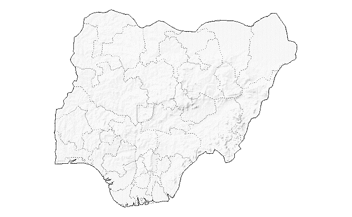
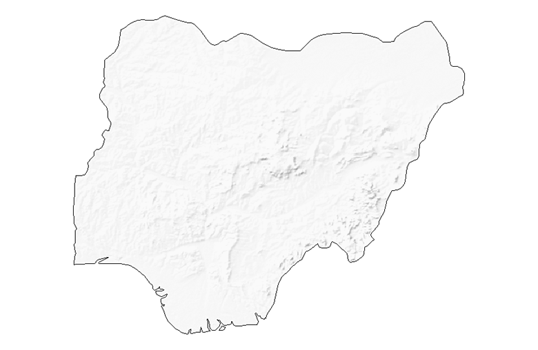
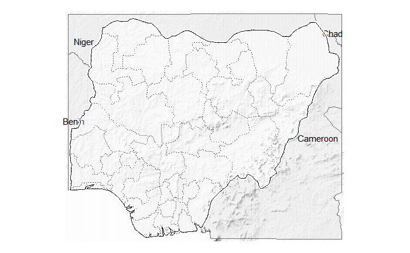

vignettes/create-terrain-basemap.Rmd
create-terrain-basemap.RmdThematic maps are single-topics maps that focus on the spatial variability of a specific distribution. At USAID’s Office of HIV/AIDs, we’ve used thematic maps to visualize the spatial distibution of HIV/AIDs Programs’ key indicators at the PSNU level. ART Saturation of Nigeria at the psnu level is a good example of one of these thematic maps. In most countries, HIV/AIDs programs are implemented only in specific districts by USAID, and creating such a thematic map usually leads to having to deal with empty states. To compensate for the non-presence in some of these districts, we used terrain rasterlayer as a basemap. These basemaps are generated in way to that the hillshape is used as a beautifier of the map.
Below are how we go about creating these basemaps
library(dplyr) # General data munging and visualisation
library(ggplot2) # General plotting
library(gisr) # OHA/SI in house package used to create these basemap
library(sf) # Spatial data management
library(glitr) # OHA/SI in house package used to help standardize vizWe will be using Nigeria as our country of focus. Let’s extract the country boundary and the states boundaries.
countryname <- "Nigeria"
adm0 <- gisr::get_admin0(countries = countryname) %>%
dplyr::select(admin)
adm1 <- gisr::get_admin1(countries = countryname) %>%
dplyr::select(name)What does the country map look like?
adm0 %>% gisr::gview()What does the states map look like?
adm1 %>%
gisr::gview() +
ggplot2::geom_sf_text(data = adm1, ggplot2::aes(label = name), size = 3)Let’s create a basemap for Nigeria.
For this, We will need to downlaod the raster file into si_path("path_raster")
This option uses rnaturalearth to extract admin0 and admin1 boundaries as sf objects.
terrain_map(countries = countryname,
mask = TRUE,
glamr::si_path("path_raster"))We could also provide you own admins boundaries. This is a classic case where official country names don’t match with rnaturalearth names. Tanzania is good example where the country name is United Republic of Tanzania.
terrain_map(countries = adm0,
adm0 = adm0,
adm1 = adm1,
terr = glamr::si_path("path_raster"))
We could also decide to use only the country boundaries
terrain_map(countries = adm0,
adm0 = adm0,
terr = glamr::si_path("path_raster"))
It’s also possible to add neighbor countries to your basemap. See below.
ras <- glamr::si_path("path_raster")
terrain_map(countries = adm0,
adm0 = adm0,
adm1 = adm1,
add_neighbors = TRUE,
add_labels = TRUE,
terr = ras)